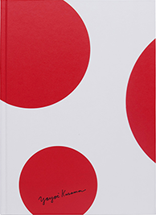
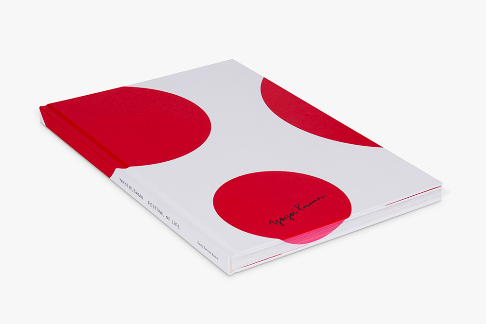
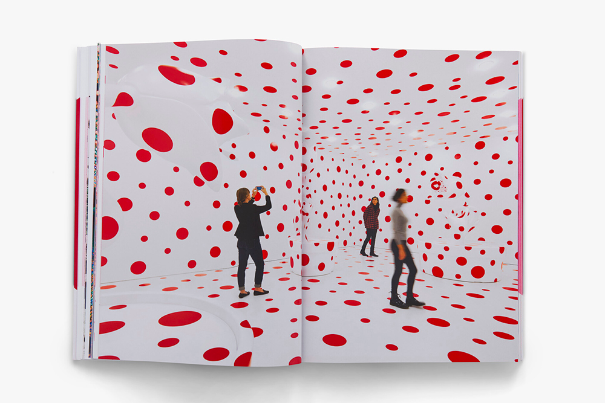
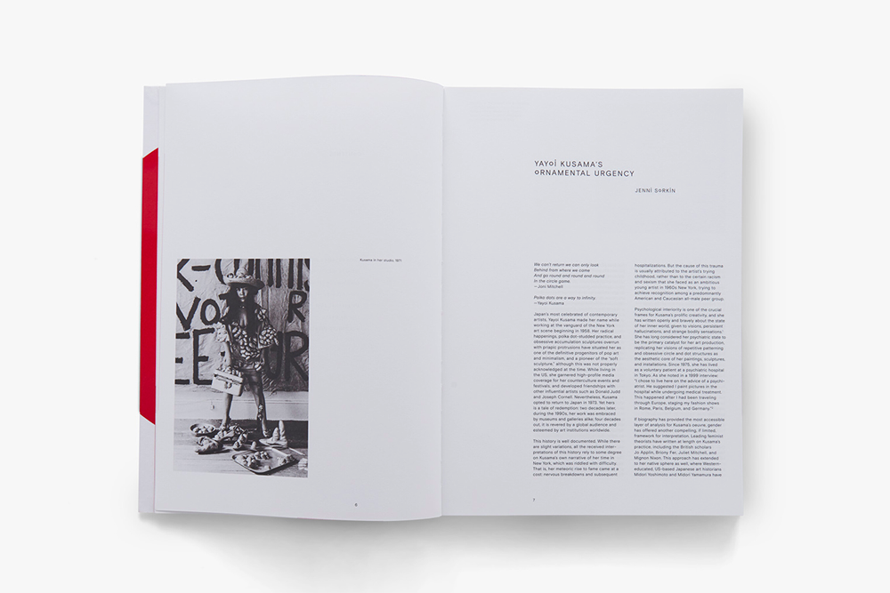

『 Yayoi Kusama: Festival of Life 』
Yayoi Kusama, Jenni Sorkin
David Zwirner
Yayoi Kusama's art is sensual, utopian, and original, and despite its highly personal nature, is loved by diverse audiences around the world. Throughout her career, Kusama has broken down the traditional boundaries between work, artist, and viewer. From paintings to performances, room-sized installations, sculptural installations, literature, film, fashion, design, and interventions within existing architectural structures. Kusama's work ranges beyond major art movements of the late 20th century, including Pop Art and Minimalism. Her work radiates vitality and passion, and is autobiographical and at times confessional. Kusama's work conveys the vitality of a living artist through her work. "Yayoi Kusama: Festival of Life" is an exhibition catalogue covering Kusama's exhibition held at the Chelsea branch of David Zwirner Gallery in New York in late 2017. Includes her iconic "My Eternal Soul" series, new large-scale floral sculptures, polka-dotted environments, and two infinity mirrored rooms. The book offers fresh perspectives on Kusama's work, including new scholarly research and posters by Jenni Sorkin.